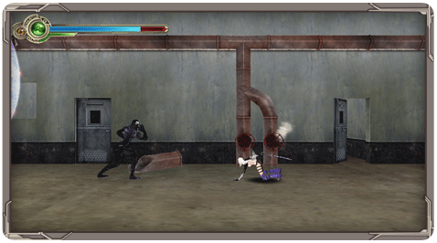

Celia tiene a su disposición multitud de movimientos especiales para derrotar a sus enemigos. A continuación tienes un listado de todos ellos, pero también puedes consultar como se realizan desde el Menú de Juego.
Lanzamientos Aéreos
Algunos ataques lanzan a sus enemigos por los aires, lo que permite a Celia saltar tras ellos y rematarlos en pleno vuelo. Si al realizar un ataque que lanza a un enemigo por los aires mantienes el botón 1 oprimido o pulsas rápidamente el
botón 2 nuestra heroína saltará tras su enemigo para realizar una combinación devastadora. Si dispones del Classic Controller, puedes hacer lo mismo manteniendo el botón x pulsado.
Esquiva
Si mantienes oprimido el botón 2 u oprimes el botón B mientras Celia está agachada, realizarás una esquiva a gran velocidad. Este movimiento te permite tanto evitar los ataques como pasar a través de enemigos para situarte en su espalda. Si dispones del Classic Controller, puedes hacer lo mismo con el botón b mientras Celia está agachada o bien con el botón L o el botón R, que te permiten elegir la dirección hacia la que vas a esquivar.
Recuperación
Si al ser golpeado por un enemigo haces rápidamente un movimiento de esquiva podrás recuperarte del impacto. Esta maniobra es excepcionalmente útil para evitar los combos más potentes de los enemigos.
